Cuit, lu, cru.
— qui l’eût cru ?
Cuisine française de saison, carte courte, tout fait maison. Après sept ans rue Chateaubriand, le bistrot rouvre ses portes dans un ancien commerce du XIXe, à Saint-Donatien.
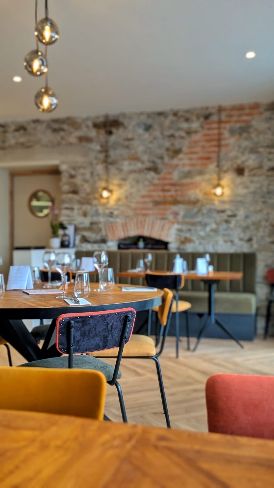
Oui, à la minute près.
L’esprit
Une carte courte qui s’écrit au rythme du marché, des produits choisis chez celles et ceux qui les font bien, et rien qui sorte d’un sachet.
Chez Cuit Lu Cru, tout est fait maison — du pain au nougat glacé. La carte tient sur une page : quatre entrées, quatre plats, trois desserts, et un plateau de fromages au lait cru de la Crémerie Saint Do, à deux rues d’ici. Elle change avec les saisons, parfois avec l’arrivage du matin.
La viande est d’origine française, le poisson est sauvage et dépend de la pêche. C’est une contrainte que l’on s’impose depuis 2017 — et la raison pour laquelle la carte ne promet jamais ce que le marché ne donne pas.
- → Carte courte, renouvelée selon saisons
- → Viande d’origine française, poisson sauvage
- → Pain, glaces, fonds & desserts : maison
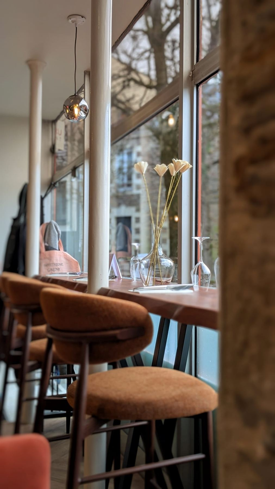
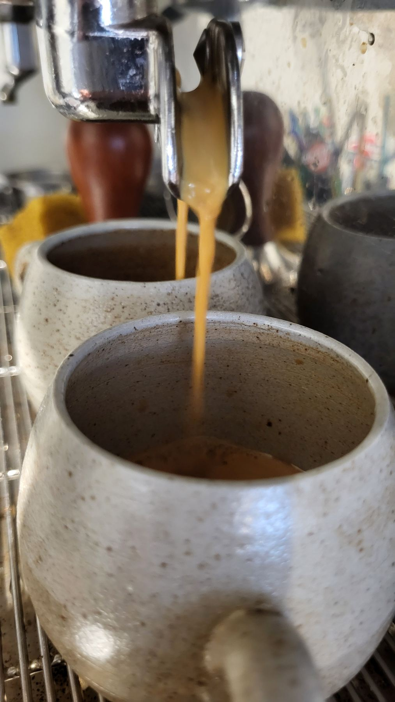
La carte
Dîner — mardi → samedi · Déjeuner — dimanche
Menu
Entrées
- Gaspacho de concombre à l’asiatique, carpaccio de veau soja-sésame
- Foie gras mi-cuit à la vanille, condiment datte-tamarin qualité extra, origine France
- Crémeux de petits pois, cecina et stracciatella
- Duo de thon rouge — tartare basilic-citron & croustillant mi-cuit +4€
Fromages
- Assiette de fromages au lait cru de l’incroyable Crémerie Saint Do
- Barisien à l’huile vanillée
Plats
- Poisson sauvage selon arrivage, sauce paëlla-chorizo
- Agneau de Dordogne, rosé et confit, jus d’agneau
- Ravioles chou pointu, olives & feta, sauce fromage blanc citron-basilic
- Duo de thon rouge — tartare & croustillant mi-cuit +6€
Desserts
- Roudoudou fraises-rhubarbe
- Macaron de tournesol, praliné de tournesol, variation café
- Nougat glacé citron-sésame
Et le midi ?
Du mercredi au vendredi, la carte du déjeuner s’écrit à l’ardoise, selon ce que le marché a donné le matin même. Service de 12h01 à 13h30 — comptez une vraie pause, pas un sandwich.
Menus du jour & actus → @cuitlucrunantes
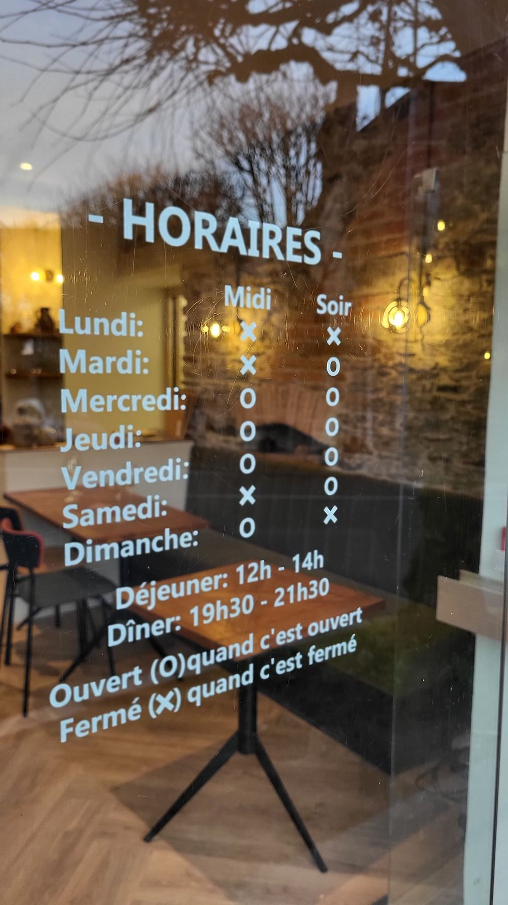
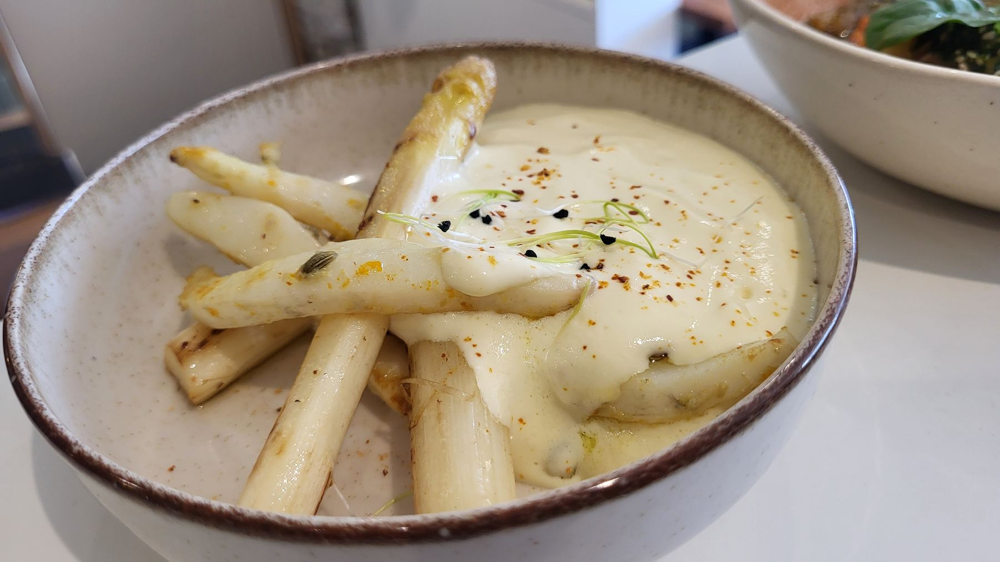
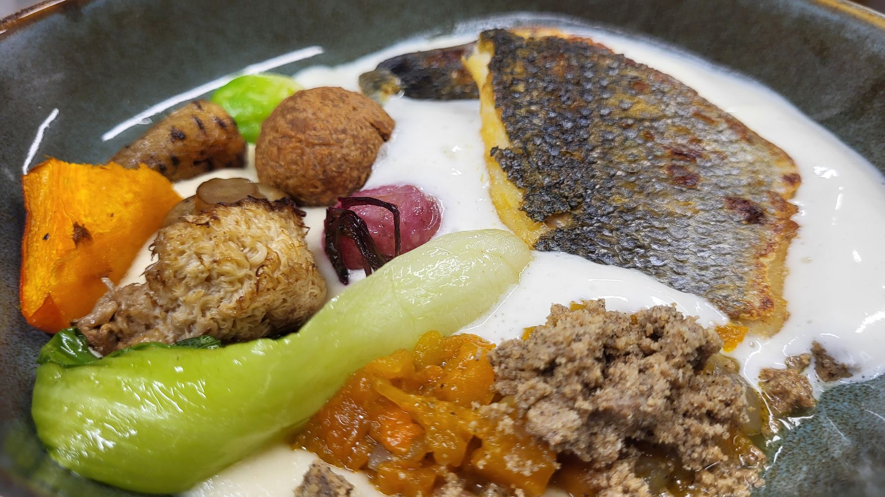
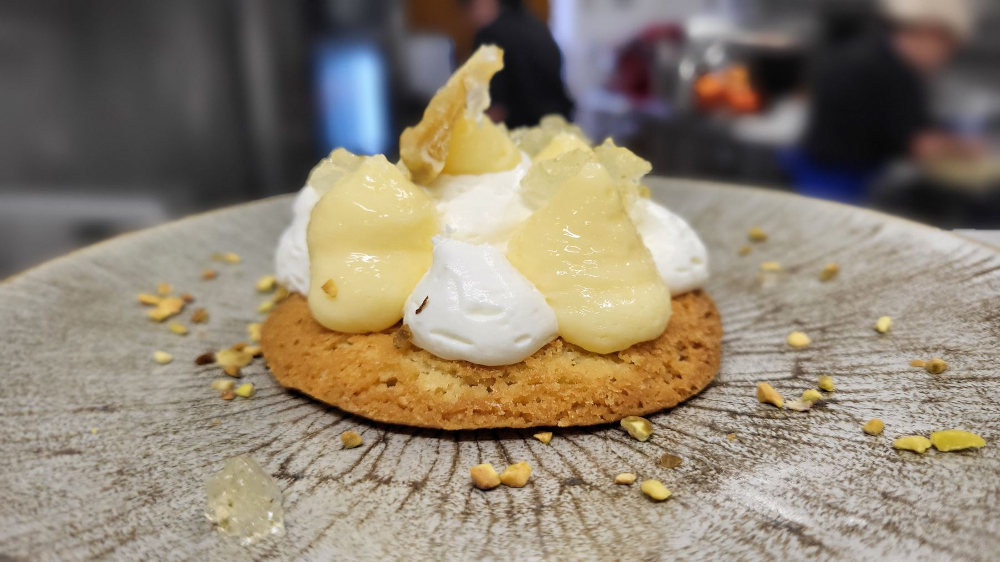
L’histoire
Cuit Lu Cru !? C’est d’abord un jeu de mots — et une histoire qui recommence.
-
2017
5 rue Chateaubriand
L’aventure commence en centre-ville. Sept années d’engagement, une clientèle d’habitués, une cuisine qui se fait un nom.
-
2024
La pause
Quatre mois de voyage — de la Gaspésie à l’Italie, en passant par le Cantal — pour se nourrir d’autres cuisines et d’autres rencontres. Puis une année en cuisine, chez les autres.
-
2025
Le lieu juste
Une trentaine de visites à la recherche du bon local. Puis une évidence : une ancienne alimentation générale vietnamienne, place Alfred Lallié. Un bâtiment de la fin du XIXe, des murs en pierre, une âme.
-
2026
Réouverture à Saint-Donatien
Six mois de travaux menés avec les amis, la famille, les copains — du soir au matin. Rénover en respectant l’existant : pierres apparentes, éléments d’origine conservés, caractère brut gardé intact.
Six mois de travaux, beaucoup de copains
planche contact — faire glisser →
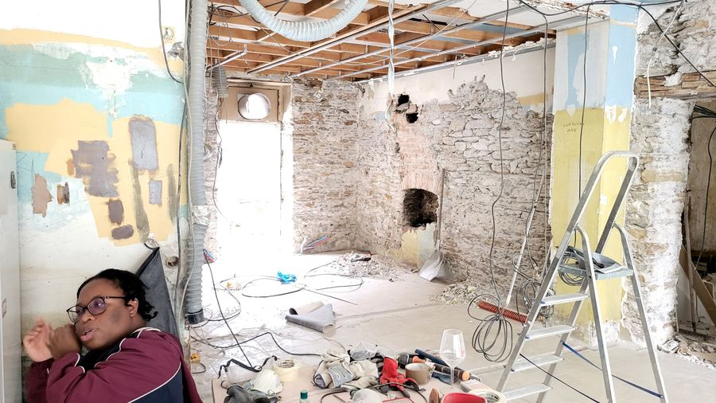
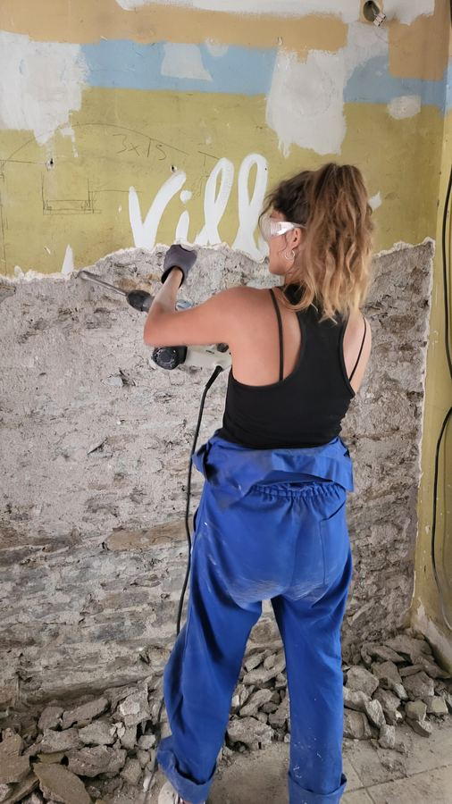
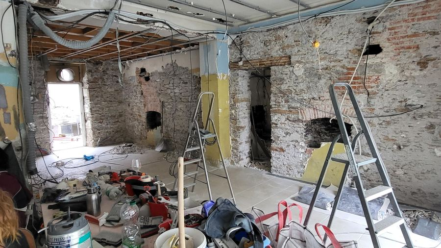
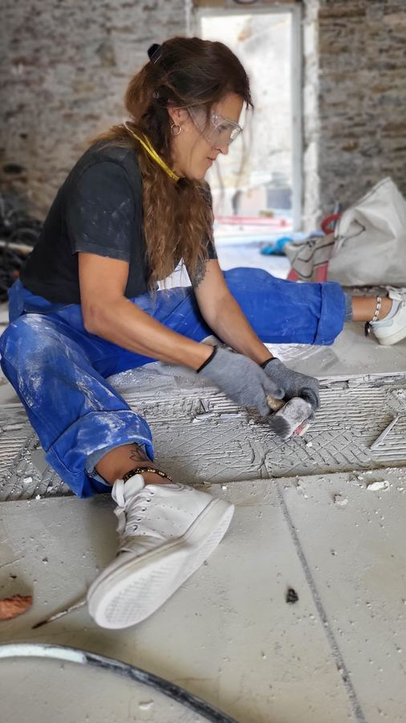
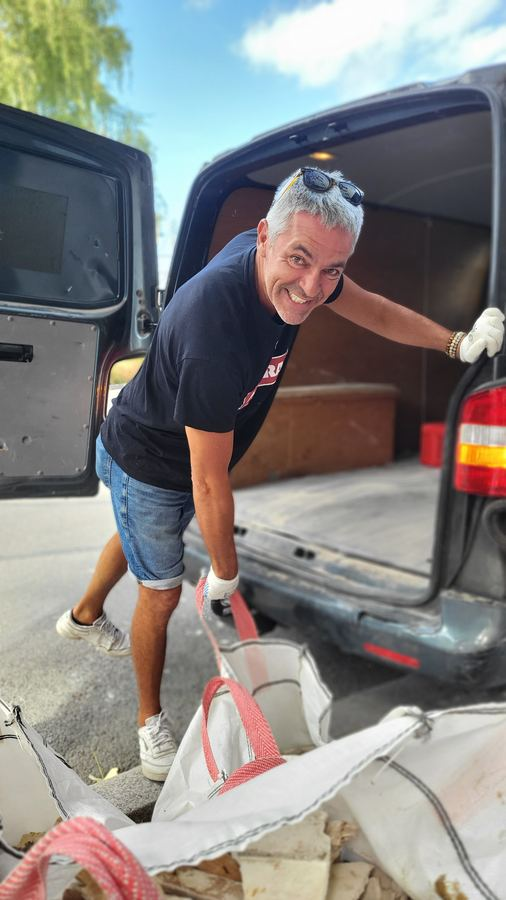
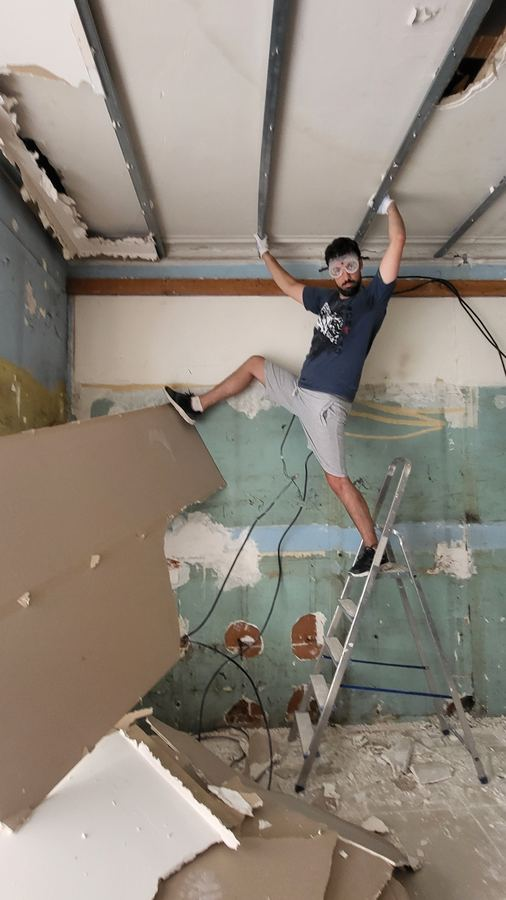
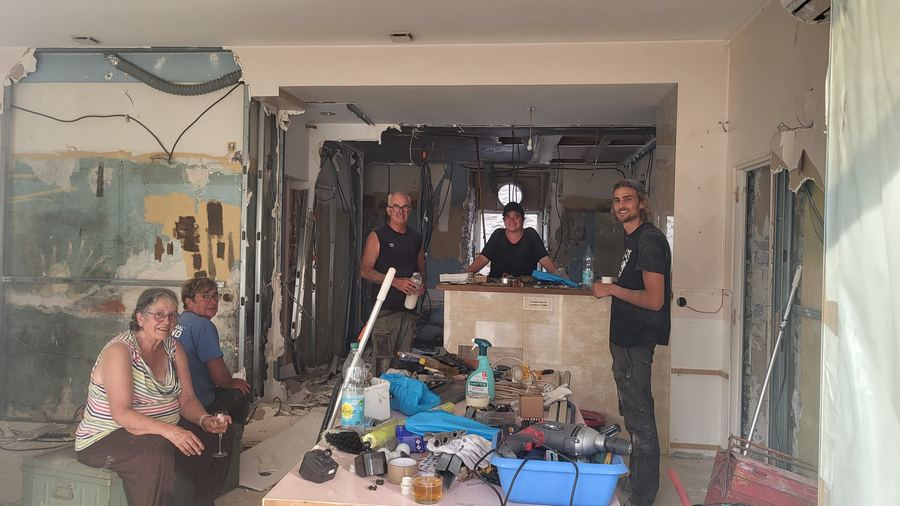
Merci à Quentin, Babou, Ludo, Joseph (pour son aide vitale), Maxime, Hervé, Emma, Charlotte, Nico, Rouliette, Keumar, Évelyne, Roland, Dominique, Jean-Luc, Gaïa, Barbara, Fab — et tous·tes ceux que nous n’avons pas cités. Chaque finition porte un peu de cette énergie collective.
Producteurs
La fraîcheur des produits et le respect des saisons sont à la base de cette cuisine.
Nous travaillons avec des fournisseurs, producteurs et vignerons qui partagent la même exigence — et nous ne servons que de la viande d’origine française. Les voici, parce qu’ils le méritent :
- Crémerie Saint Dofromages au lait cru — Nantes
- Maison Massefoie gras origine France
- Agneau de Dordogneélevage plein air
- Poulet de Janzévolaille fermière — Ille-et-Vilaine
- La Marjotièreferme maraîchère — pays nantais
- Ferme de la Forêtproduits fermiers
- Kultivarlégumes de saison
- Brasserie Bouyerbières artisanales
- Berjacprimeur
- Vignerons indépendantscarte des vins vivante
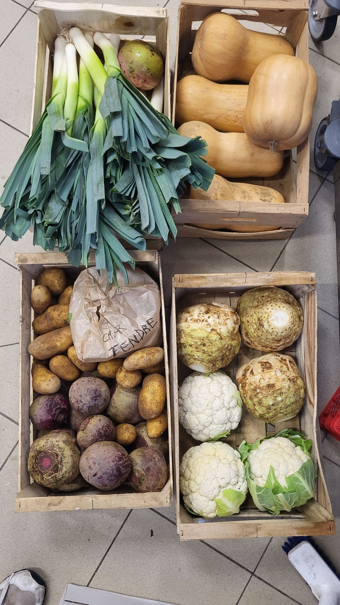
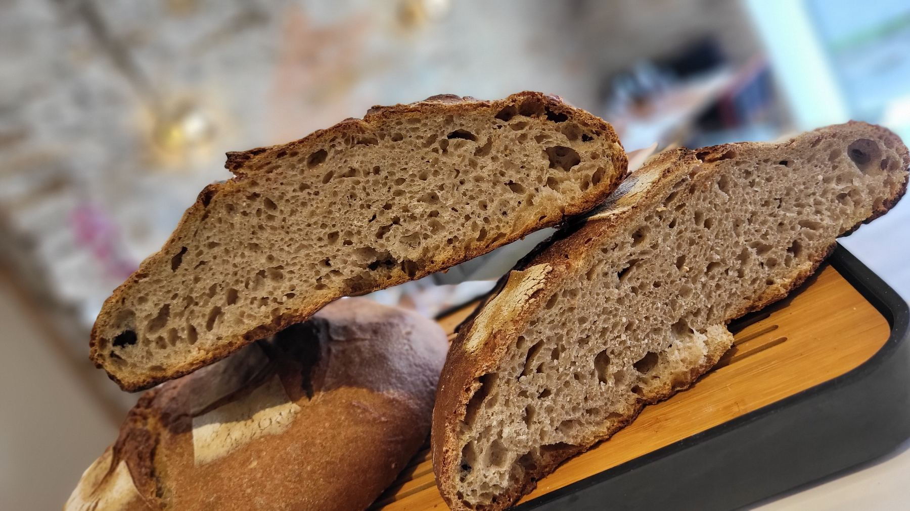
Infos & réservation
Réserver une table
La réservation en ligne est simple, sans frais, et confirmée par courriel. Par téléphone, c’est très bien aussi.
Groupe de plus de 8 personnes, privatisation, anniversaire ? Appelez-nous ou écrivez via Instagram — le restaurant s’adapte.
Horaires
| Lundi | fermé | fermé |
|---|---|---|
| Mardi | — | 19h31 – 21h30 |
| Mercredi | 12h01 – 13h30 | 19h31 – 21h30 |
| Jeudi | 12h01 – 13h30 | 19h31 – 21h30 |
| Vendredi | 12h01 – 13h30 | 19h31 – 21h30 |
| Samedi | — | 19h31 – 21h30 |
| Dimanche | 12h01 – 13h30 | — |
Ouvert (O) quand c’est ouvert.
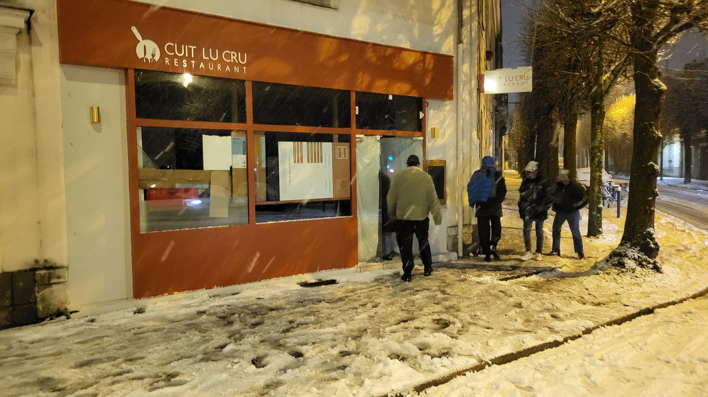